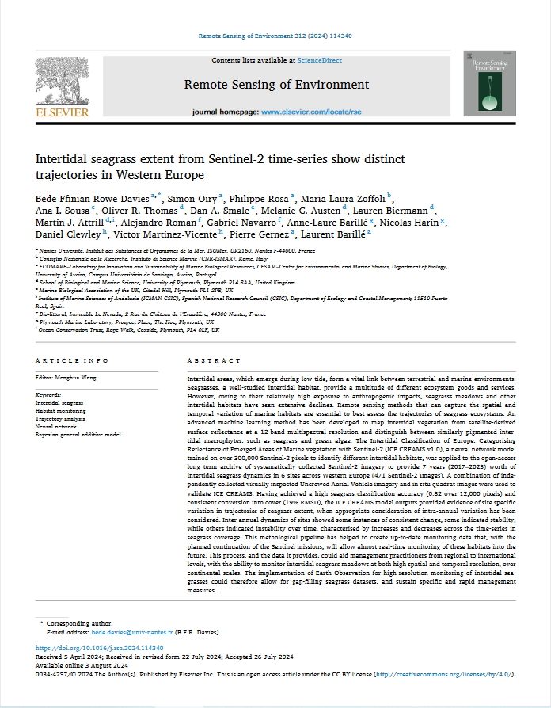
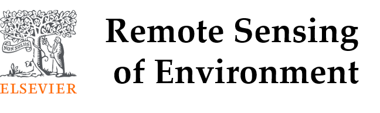
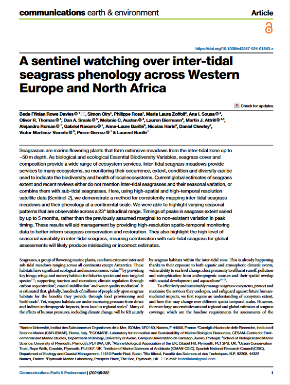
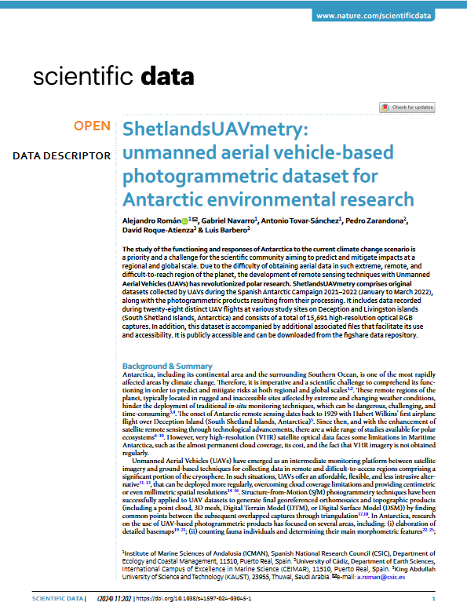
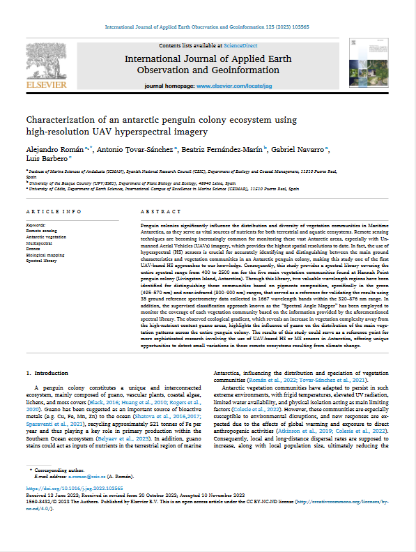
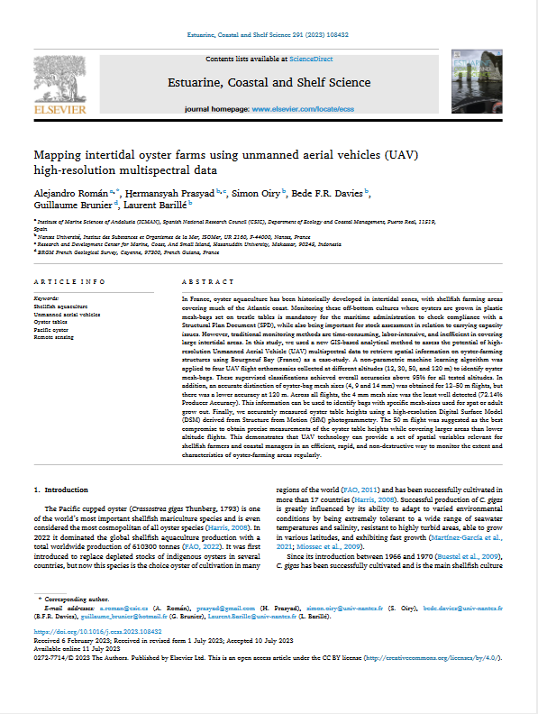
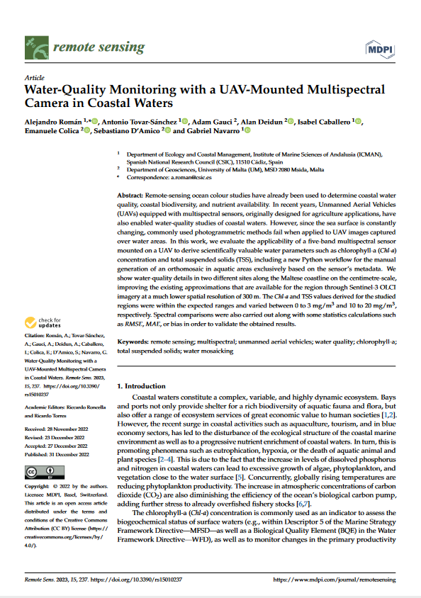
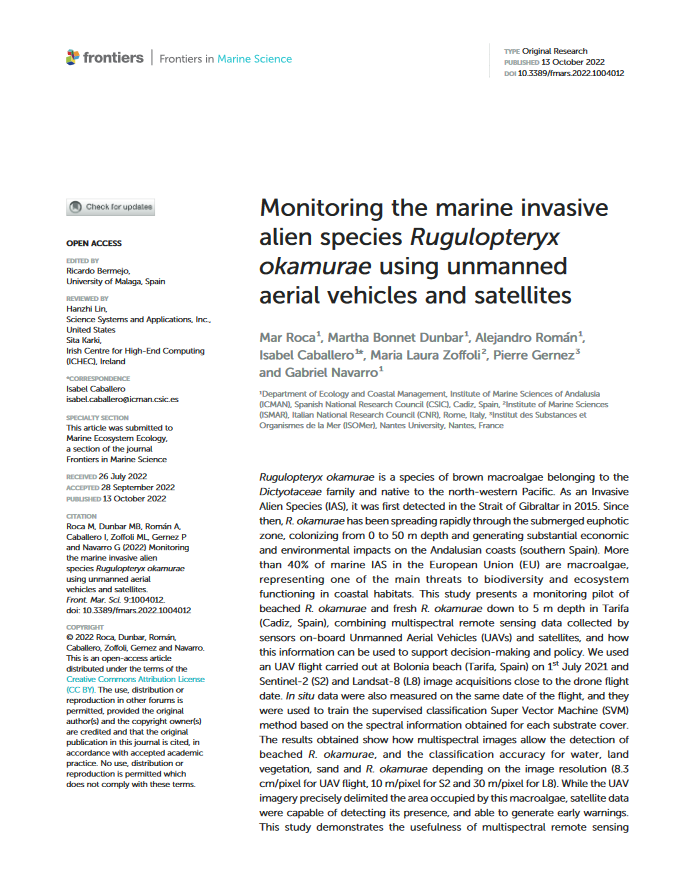
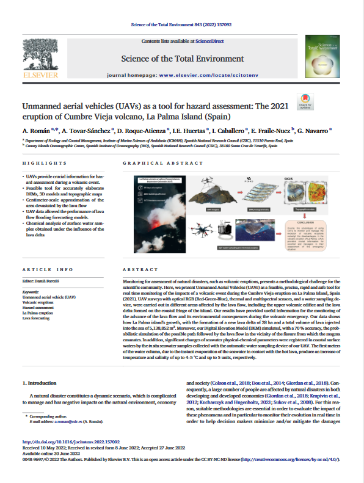

Publications
Intertidal seagrass extent from Sentinel-2 time-series show distinct trajectories in Western Europe.


Bede Ffinian Rowe Davies, Simon Oiry, Philippe Rosa, Maria Laura Zoffoli, Ana I.Sousa, Oliver R.Thomas, Dan A.Smale, Melanie C.Austen, Lauren Biermann, Martin J.Attrill, Alejandro Román, Gabriel Navarro, Anne-Laure Barillé, Nicolas Harin, Daniel Clewley, Victor Martinez-Vicente, Pierre Gernez & Laurent Barillé.

A sentinel watching over inter-tidal seagrass phenology across Western Europe and North Africa.

Bede Ffinian Rowe Davies, Simon Oiry, Philippe Rosa, Maria Laura Zoffoli, Ana I.Sousa, Oliver R.Thomas, Dan A.Smale, Melanie C.Austen, Lauren Biermann, Martin J.Attrill, Alejandro Román, Gabriel Navarro, Anne-Laure Barillé, Nicolas Harin, Daniel Clewley, Victor Martinez-Vicente, Pierre Gernez & Laurent Barillé.
ShetlandsUAVmetry: unmanned aerial vehicle-based photogrammetric dataset for Antarctic environmental research.

Enhancing Georeferencing and Mosaicking Techniques over Water Surfaces with High-Resolution Unmanned Aerial Vehicle (UAV) Imagery.
Characterization of an antarctic penguin colony ecosystem using high-resolution UAV hyperspectral imagery.

Mapping intertidal oyster farms using unmanned aerial vehicles (UAV) high-resolution multispectral data.

Water-Quality Monitoring with a UAV-Mounted Multispectral Camera in Coastal Waters.

Remote Sensing: Satellite and RPAS (Remotely Piloted Aircraft System).
Monitoring the marine invasive alien species Rugulopteryx okamurae using unmanned aerial vehicles and satellites.

High-spatial resolution UAV multispectral data complementing satellite imagery to characterize a chinstrap penguin colony ecosystem on deception island (Antarctica).
Unmanned aerial vehicles (UAVs) as a tool for hazard assessment: The 2021 eruption of Cumbre Vieja volcano, La Palma Island (Spain).
